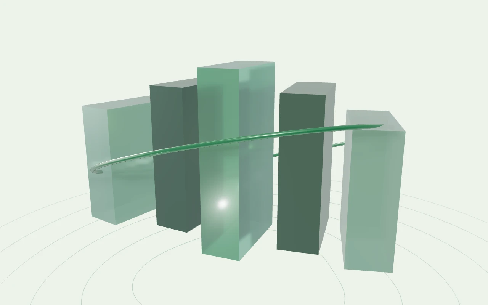
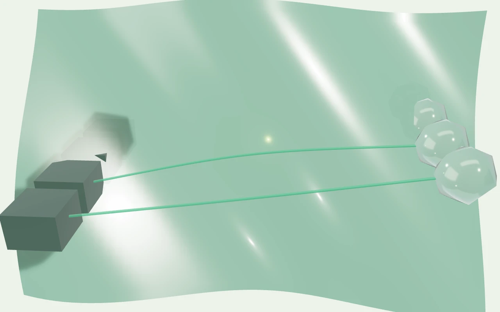
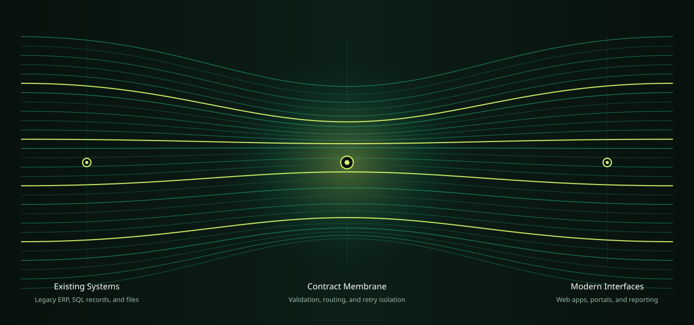

Software for the work you do.
We build business software, automate handoffs, connect existing systems, and set up the infrastructure that keeps them running.

Custom business software
Build a system around the way your team works. We design the records people need, who can change them, and how the work gets approved.

Give purchase requests a home.
When approvals live in email and budgets live in spreadsheets, staff have to piece together the status of a purchase. A shared application can keep the request, the decision, and the reason together.
See what one request would contain
- Request
- Item, cost, department, and reason for purchase.
- Decision
- The reviewer, the approval limit, and any conditions.
- History
- What changed, who changed it, and when.
Workflow automation
Move routine work forward automatically. When a request needs a judgment call, send it to the person who can make it.
Follow a purchase request.
In this example, a request moves from intake to the right reviewer and ends with a recorded decision.
- Check the requestLook for a missing estimate or a duplicate request before it goes further.
- Find the reviewerSend it to the department lead. Requests above their limit go to finance.
- Record the decisionSave the outcome and tell the requester. A retry keeps the same request record.
Systems integration
Share data between tools without forcing a replacement. We define what each system owns and how updates move between them.

Keep stock in sync with purchasing.
- Without a connection
- Staff export receipts and re-enter them in the stock system. A missed upload leaves the available quantity out of date.
- With a connection
- Receiving sends one checked record to stock. The stock system owns the quantity and returns a clear result for each update.
What happens when an update fails?
Keep the source receipt intact. Show the rejected update and the reason so someone can correct it or retry the same update without recording the receipt twice.


Technical infrastructure
Choose a hosting setup your team can maintain. We plan around network access, backups, and the way your organization responds when something fails.
Practice restoring a backup.
A nightly backup shows that files were saved. A rehearsal shows what your team can bring back and where work can resume.
See a recovery rehearsal
- Restore a recent backup in an isolated environment.
- Check that staff can find the expected records and finish a routine task.
- Write down who restores the service and what staff should do during downtime.
Tell us where work gets stuck.
Bring an example. We can start with who does the work, what they use today, and what needs to change.